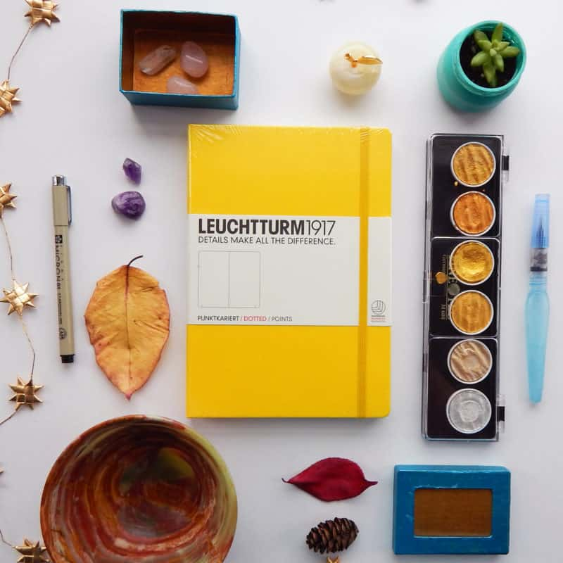
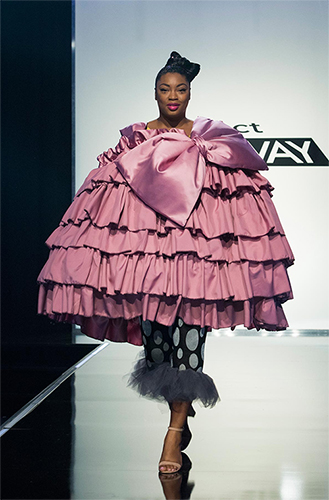
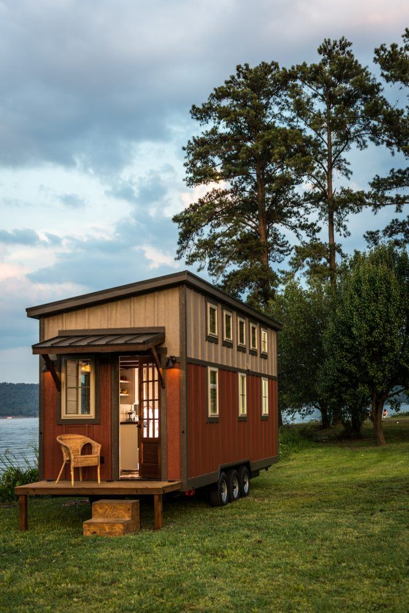

Programmed Learning Sequences
Each sample includes planned intention, success criteria, assessment for learning, and observed student response. All samples map to NESA outcomes and the Australian Professional Standards for Teachers.
Topic: Simulations in the Real World: Industry Applications, Immersion, and Impact

Learning Intention:
Students understand how simulations are used across different industries, experience immersive VR, and evaluate how simulations address societal needs and potential risks.
Success Criteria:
- Describe the purpose and impact of simulations in various industries.
- Reflect on personal experiences using VR.
- Explain the benefits and risks of simulations.
Assessment Methods
Video analysis notes, Think-Pair-Share reflection, VR headset journal entry, and research task in OneNote.
View Full Lesson PlanTopic: What Makes a Product Successful?
Learning Intention:
Students understand the key features that make a product successful and apply design thinking to evaluate products. They identify and analyse how function, aesthetics, ergonomics, durability, sustainability, and innovation influence user satisfaction and product appeal.
Success Criteria:
- Describe what makes their favourite product successful.
- Explain how products meet user needs through design features.
- Identify at least three design factors in real-life examples.
Assessment Methods
Observation of student participation during group discussion and Think-Pair-Share, written responses in portfolios or sticky notes, and results from the Kahoot quiz on design factors.
View Full Lesson PlanTopic: From Avant-Garde to Apparel - The Fundamentals of Textiles and Design
Learning Intention:
Students explore how designers move from concept to finished garment. They analyse avant-garde Met Gala designs, identify elements and principles of design, and apply these ideas to plan and begin constructing their own wearable piece. Students learn how to document their process in a folio to professional standard.
Success Criteria:
- Describe the elements and principles of design and explain how they affect visual impact and function in apparel.
- Identify and justify functional and aesthetic features in existing garments.
- Generate an original design concept inspired by a theme, and communicate this idea with sketches, notes, and reference imagery.
- Select suitable fabrics and techniques for their concept and explain why those choices suit the purpose of the garment.
- Begin structured folio documentation that tracks inspiration, research, experimentation, decision making, and construction steps.
Assessment Methods
Folio checkpoints documenting inspiration, research, sketches, and fabric testing. Teacher observation of practical skills during garment construction. Class discussion about design decisions and function versus aesthetics. Short written reflections on design intent. Presentation of concept linked to a theme, similar to senior Textiles major project expectations.
View Full Unit PlanTopic: The Influence of Migration on Australian Cuisine
Learning Intention:
Students understand how migration has shaped Australian cuisine and recognise the fusion of traditional and contemporary food practices. They analyse cultural influences on cooking techniques, discuss family food traditions, and reflect on how global migration affects personal eating habits.
Success Criteria:
- Outline historical events that have shaped Australian food culture.
- Identify traditional and fusion dishes influenced by migration.
- Share personal or family food traditions with cultural significance.
Assessment Methods
Observation of student participation during class discussions, completion of unit review questions on migration's impact, listing of multicultural food influences in their community, and Kahoot quiz identifying food origins.
View Full Lesson PlanTopic: Introduction to Tiny Homes
Learning Intention:
Students explore why people design and live in tiny homes and how these designs respond to real sustainability needs. They begin to link space, function and environment. They work in teams to investigate features such as off-grid power, efficient storage and reduced footprint.
Success Criteria:
- Describe at least one reason people lived in small homes in the past and one reason people choose tiny living today.
- Work with a partner or group to collect information during the Tiny Home Treasure Hunt.
- Ask and answer questions about tiny home features and their purpose using terms such as sustainable, off-grid and footprint.
Assessment Methods
Teacher observation of participation in the KWL chart discussion and the Tiny Home Treasure Hunt, written responses on the scaffolded worksheet, and end-of-lesson reflection on how their thinking about housing and sustainability has changed.
View Full Lesson Plan